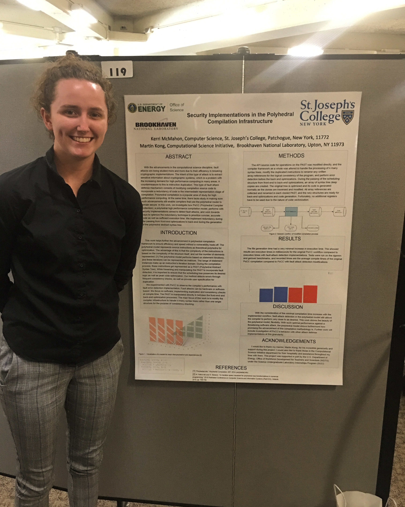
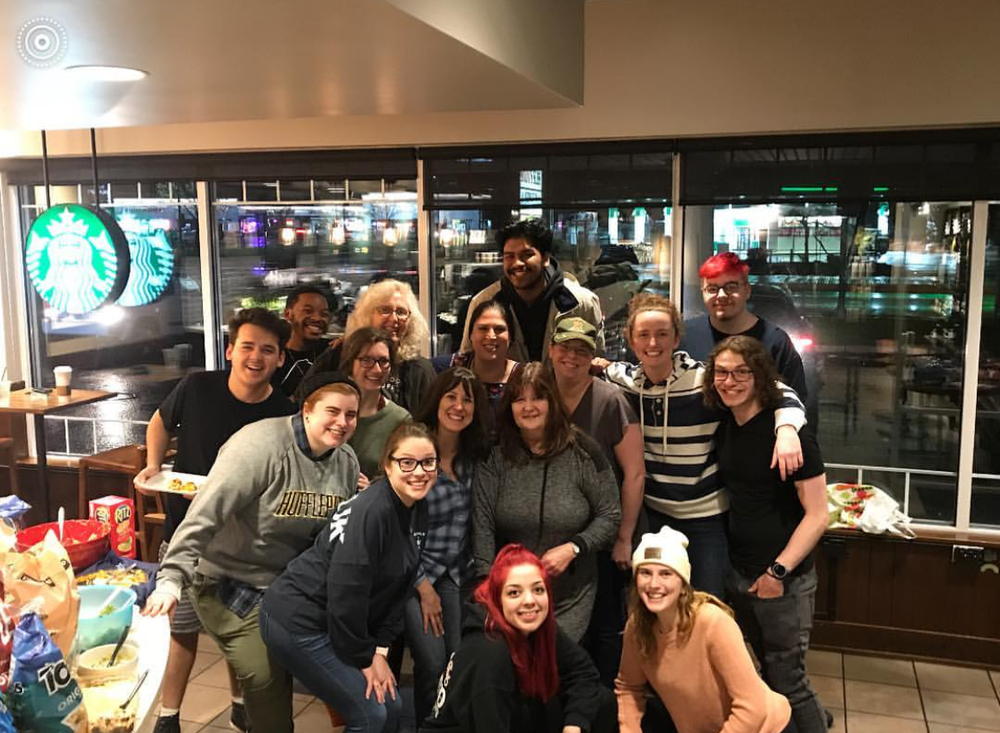

My Work Experience
Brookhaven National Laboratory
I interned at Brookhaven National Laboratory this summer from June 2nd to August 8th. There, I explored security implementations in the polyhedral compilation infrastructure. Specifically, I tested the effectiveness of code redundancy in prevention of compilation time attacks and evaluated the compilation model's behavior with these implemented measures. Not only was this an incredible experience, but I discovered my fascination for compilers and learned many, many things that I may not have necessarily learned in the classroom.

Me with my research poster the day of the intern poster session.
Starbucks
I am a coffee barista at Starbucks and I work around 20 hours per week. On top of everything else, this often leaves me sleep deprived. I absolutely love this job even though it can be very physically, and mentally taxing to be in such a fast-paced environment. I am a hard worker and believe much in loyalty to my bosses. My manager's name is Joann Williams, and her and I have a great worker-employer relationship due to (in my opinion) the loyalty and eagerness for productivity that we both share. No, I'm not going to be showing her this for brownie points. I absolutely adore the staff I work with. To be honest, I don't know how they deal with me for 20 hours per week. They deserve a round of applause.

My coworkers and I at a quarterly work party